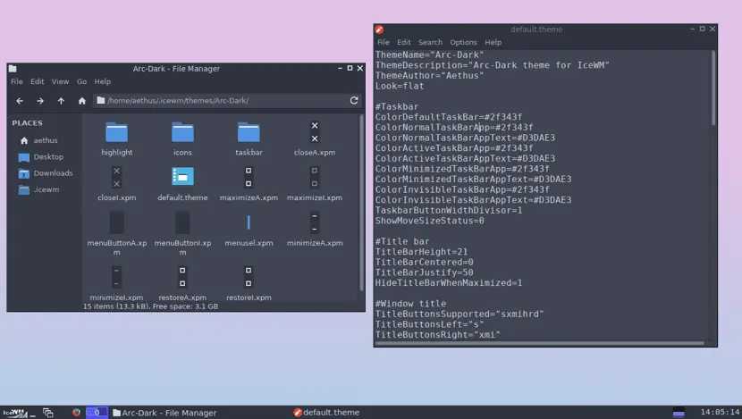

Awesome WM
awesome is a dynamic window manager for the X Window System developed in the C and Lua programming languages. Lua is also used for configuring and extending the window manager. Its development began as a fork of dwm, though has differed considerably since.[4] It aims to be extremely small and fast, yet extensively customizable. It makes it possible for the user to manage windows with the use of keyboard.
The fork was initially nicknamed jdwm, where "jd" denoted the principal programmer's initials and dwm denoted the software project it was forked from. The first git repository for what was to become awesome was set up in September 2007. jdwm was renamed to awesome, named after the same phrase used by the How I Met Your Mother character Barney Stinson.[5] awesome was officially announced on the dwm mailing list on September 20, 2007.
DWM
dwm is a minimalist dynamic window manager for the X Window System developed by Suckless that has influenced the development of several other X window managers, including xmonad[6] and awesome.[7][8] It is externally similar to wmii, but internally much simpler. dwm is written purely in C for performance[9] and lacks any configuration interface besides editing the source code.[10] One of the project's guidelines is that the source code is intended never to exceed 2000 SLOC, and options meant to be user-configurable are all contained in a single header file.
Icewm

IceWM is a stacking window manager for the X Window System, originally written by Marko Maček. It was written from scratch in C++ and is released under the terms of the GNU Lesser General Public License.[4] It is customizable, relatively lightweight in terms of memory and CPU usage, and comes with themes that allow it to imitate the GUI of Windows 95, Windows XP, Windows 7, OS/2, Motif, and other graphical user interfaces.
IceWM can be configured from plain text files stored in a user's home directory, making it easy to customize and copy settings. IceWM has an optional, built-in taskbar with a dynamic start menu, tasks display, system tray, network and CPU meters, mail check and configurable clock. It features a task list window and an Alt+Tab task switcher. Official support for GNOME and KDE menus used to be available as a separate package. In recent IceWM versions, support for them is built-in as well. External graphical programs for editing the configuration[4] and the menu are also available.
JWM
JWM is a light-weight window manager for the X11 Window System. JWM is written in C and uses only Xlib at a minimum. Because of its small footprint, JWM makes a good window manager for older computers and less powerful systems, such as the Raspberry Pi, though it is perfectly capable of running on modern systems. JWM is included in small Linux distributions such as Puppy Linux and Damn Small Linux, and it is available as a separate package in many other distributions.
Spectrwm
spectrwm is a small dynamic tiling window manager for Xorg. It tries to stay out of the way so that valuable screen real estate can be used for much more important stuff. It has sane defaults and does not require one to learn a language to do any configuration. It was written by hackers for hackers and it strives to be small, compact and fast.